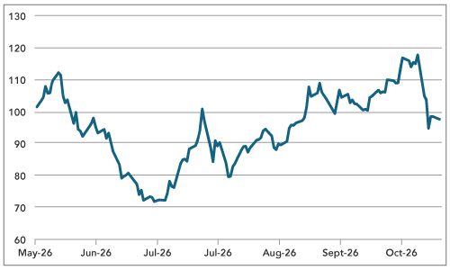
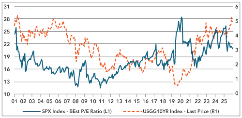

|
|
| |
|
12 November 2026
|
| |
|
Volatility not Disaster
|
| |
-
Mid-term elections reinforce the sharp reset of tech valuations
-
The real impact of Democrat local government is at a subsector level focused on data centres
-
The real story - higher bond yields keep up the pressure on equity valuation
- Indian equities are back as the non-tech portfolio diversifier supported by foreign buying
- Watch for the US inflation data this coming week- a potential market recovery spoiler
|
| |
|
You might also like our
Two
Risks, One Channel
and
Macro and Markets Review for October 2026
Click
here
to read them for free.
|
| |
| |
|
Volatility not disaster — that’s our take on a week that felt much worse than it actually was. On
Thursday, the Nasdaq 100 fell 6.4%, its worst single-day decline since March 2020. Although that one
session wiped out $2.3 trillion of value from the Nasdaq 100, by Friday’s close the S&P 500 had
recouped much of those losses and was down 2.7% on the week. US jobs rose by 165,000 in October,
almost three times the expected increase.
|
| |
|
Chart 1: S&P500 Sharp Fall
|
| |
|

|
| |
|
Source: Bloomberg
|
| |
|
The economy is fine; that in itself isn’t a worry. What’s changed is what and how investors will pay
for the AI story henceforth. Voters have put limits on the data-centre boom, companies are cutting
back spending, and bond yields near 4.9% offer a real alternative. This isn’t a crash; it’s a market
learning that the easy part of the AI trade is over.
|
| |
|
The Big Picture
|
|
The market spent the week pricing in a slower AI build-out. The Democrats took both houses of
Congress, and NBC exit polls showed 56% of voters noting AI and data centres were a major factor
influencing their voting decision. Qualcomm and Arm also disappointed, and memory stocks collapsed:
on Thursday, SanDisk fell 22%, and Micron 17%.
|
|
We believe the political damage is exaggerated. Neither party wants to give China the AI race;
Washington is less likely to legislate on safety than to build blocks. The real action is with the
states. Texas has about a quarter of planned US data-centre capacity, and its incoming governor Gina
Hinojosa campaigned for a moratorium (though such pauses may not last). But even that won’t stop the
change. The bigger change started before the election as power shortages, local opposition, and
stretched cash flow slowed investment.
|
| |
|
UBS expects hyperscaler capex to rise 76% this year, then only 25% in
2027 and 6% in 2028. Spending
isn’t falling; it is growing more slowly and judiciously. That helps Microsoft, Amazon, Alphabet,
and Meta but hurts the companies that sell them chips and equipment. The market traded just that
way. In the two days after the election, the 72 S&P 500 companies building out the build-out fell
13.3%, the five hyperscalers rose 1.7%, and the rest of the index was flat.
|
|
What investors are really asking is what’s left if you take away the growth of tech. AI spending has
been driving much of US profit growth, investment, and equity gains for three years now. A slower
build-out means less of all three. That’s not a crisis; it’s lower returns.
|
| |
|
Economy
|
|
The US economy is not the problem, at least for the moment. October payrolls rose 165,000 against
expectations of about 60,000, unemployment fell to 4.1%, and data for August and September were
revised up by a combined 84,000. Wages rose 3.1% on the year, still below inflation, indicating real
pay is falling. Strong hiring and squeezed real incomes make life awkward for the Fed. These figures
do not signal a recession.
|
| |
|
Elsewhere in the world it was quieter. Europe watched from the sidelines. The Bank of Japan held at
1.25% but said underlying inflation has reached 2%, opening the door to a December hike. In the
Gulf, a Qatar-brokered plan to reopen the Strait of Hormuz pushed oil lower, and the S&P 500 energy
sector lost nearly 12% on the week. Cheaper oil helps importers in Asia and Europe and cools global
inflation.
|
| |
|
Central Banks and Bonds
|
|
Bonds did their job in portfolios, but only just. The 10-year yield fell 8bps to 4.86% as investors
shunned equities, but the yields subsequently rose after the jobs report. The 30-year ended near
5.27%. Markets put the odds of a Fed rate hike on 9 December at above 75%. This is a tightening
cycle, and the fall in yields signalled a flight to safety, not a change in direction. Our concern
is that yields will now rise again, for reasons that have little to do with the Fed.
|
| |
|
The fiscal numbers are getting worse. The deficit for the year to September was $2.0 trillion, about
6.1% of GDP, against the 5.8% the Congressional Budget Office (CBO) expected in February. Net
interest costs surged past $1 trillion, surpassing the country's defence spending. The CBO expects
debt held by the public to rise to a record 120% of GDP by 2036 from about 100% currently.
|
|
A divided Congress will not fix this. Democrats will block new tax cuts but will not cut spending,
so gridlock freezes the deficit near 6% of GDP in an economy at full employment.
|
| |
|
The Treasury trimmed its borrowing estimate last week and kept auction sizes unchanged, but the
arithmetic does not go away. This week's 10-year and 30-year auctions will show whether buyers want
a higher yield to hold US debt. We expect the term premium, the extra return for lending over longer
maturities, to keep rising.
|
| |
|
Equities
|
|
The S&P 500 closed at 7,377, down 2.7% on the week and about 6% below its October record. The Nasdaq
Composite is in correction territory. On Thursday, the chip index fell 12% while Nvidia was down 9%;
Alphabet and Amazon each fell about 2%. Asia took the brunt: on Friday, the Nikkei fell more than
6%, and trading in Seoul was halted after an 8% drop.
|
| |
|
This is not 2000, when the S&P 500 traded at around 24 times forward earnings. On Bloomberg's
figures, it now trades at about 20 times this year's expected earnings, and profit forecasts have
been raised for three quarters running. But many strategists now call the market cheap, and we
disagree. A P/E means little on its own; it has to be judged against what bonds pay. From 2002 to
2007, the last time the 10-year yielded between 4% and 5%, the S&P 500 traded at roughly 14 to 18
times. Today it is about 20 times (Chart 2). The past three years, when P/Es rose above 20 as yields
climbed towards 5%, look like the anomaly. Those calling the market cheap use forecasts reaching
into 2027, which assume another year of high-teens profit growth: exactly the growth we think is at
risk.
|
| |
|
Chart 2: High Long-Term Interest Rates Typically Mean Lower P/E
Multiples
|
|
S&P 500 forward P/E (Bloomberg BEst, left axis) against the US
10-year Treasury yield (%, right axis).
|
| |
|

|
| |
|
Source: Bloomberg
|
| |
|
Higher margins and more software in the index may make a modest premium justifiable but it doesn’t
make the market cheap. When a risk-free bond pays close to 5%, equities have to earn their place in
a portfolio. Fear beat price last week. Thursday’s drop was more than four standard deviations; VIX
jumped 11.6 points (on only 16 days since 1990). That says as much about crowded positions as new
newsflow.
|
| |
|
The AI supply chain looks cheaper still at 13.1 times the next 12 months earnings (26% discount to
index). But the earnings forecasts have risen more than 50% faster than the market this year and
assume spending keeps accelerating ahead: if capex growth falls from 76% to 25% then forecasts will
fail to hold their ground. A low multiple of falling number is not cheap.
|
| |
|
The better parallel is late 2018: the Fed raising rates, Democrats taking the House, and tech
leading a sell-off. The S&P 500 fell almost 20% before the 2018 Christmas Eve. The difference today
is a 10-year yield of 4.9%, not 3.2%. A high multiple is fine as long as earnings forecasts keep
rising. We think those upgrades will now flatten out, as slower investment takes away the
chipmakers' growth. That is our forecast, not yet the data. Without upgrades, the multiple has
nowhere to go, and markets tread water.
|
| |
|
Dan Ives, Wall Street’s best-known tech bull, calls this a golden buying opportunity, like March
2020 or April 2025. We agree the AI story is not over. But in 2020 and 2025, policy was easing. This
time the Fed is likely to raise rates.
|
| |
|
Credit, liquidity, and commodities
|
|
Credit is where a correction becomes something worse, and so far it is calm. Worries about
CoreWeave's borrowing and slightly dearer default insurance are worth noting, but Apple raised $7.5
billion of bonds on the day of the rout. That does not reflect a credit crunch. The risk emanates
from the smaller, indebted data-centre operators whose plans assume full-speed growth. Their
lenders, many in private credit, would feel a slowdown first.
|
| |
|
Oil's fall from around $102 to $91 is a supply story, on hopes that the Strait of Hormuz reopens,
and good news for inflation. Ironically with maybe less inflation risk gold rose to about $4,100 on
Thursday while Bitcoin fell to around $76,000. Gold still does its job in a world of large deficits
and political risk. Bitcoin does not.
|
| |
|
Chart 3: Brent Oil price corrects 10%
|
| |

|
| |
|
Source: Bloomberg
|
| |
|
Politics
|
|
The midterms were an earthquake for the Republicans. The Democrats won both houses, flipping Senate
seats as far afield as Texas, Ohio, and Kansas, in perhaps the largest popular-vote win since 1976.
|
| |
|
President Trump's answer was to double down, naming Stephen Miller, the architect of his immigration
policy, as chief of staff from Monday. The appointment of the most hardline figure in the
administration as chief of staff signals little interest in compromise. Nevertheless, Senate
Minority Leader Chuck Schumer has promised to fight Miller every step of the way.
|
|
In the short term, expect confrontation: investigations and hearings from January, including on AI,
more rule by executive order, and the risk of bickering over shutdown and debt-ceiling in 2027.
|
| |
|
Nevertheless, over the longer term, we are more hopeful. A result this size cannot be ignored, and a
president with two years left, and a hostile Congress, eventually have to deal. History favours
patience: since 1945 the S&P 500 has averaged a 12% gain in the year after a midterm, and 9% in a
second term. Restoring some checks on sudden policy moves is good for risk premia over time. It just
will not feel like it for a few months.
|
| |
|
Structural change: from capital gains to income
|
|
The shift we expect to outlast this cycle is from chasing capital gains to collecting income. For 15
years after 2008, cash and bonds paid almost nothing, so investors had to seek growth elsewhere, and
growth meant technology. Now a 10-year Treasury yields 4.9%, while the 30-year yields more than 5%.
If AI growth slows while governments keep borrowing, a certain yield will be worth more than an
uncertain gain.
|
| |
|
The evidence is already there of this shift. US REITs returned 16.7% in the first eight months of
the year, outperforming the S&P 500 after three poor years. In the first quarter, US REITs yielded
1.7 percentage points above the 10-year Treasury, while private property offered almost no premium.
Two caveats here: a December Fed hike would hurt rate-sensitive assets in the short term, and
data-centre REITs carry the same AI risk as the chipmakers. Property – with steady, diversified
rental income – presents an opportunity that investors should consider.
|
| |
|
The GCIO asset-allocation view
|
|
This week does not justify a dramatic change. Instead, it confirms the direction we were already
leaning towards: less reliance on capital gains, more on income and quality.
|
| |
|
Cash pays well while the Fed tightens, giving us the option to buy if the correction deepens. In
bonds, we prefer short- and medium-term maturities, and are wary of long US bonds while deficits run
near 6% of GDP. Investment-grade credit is sound. In high yield, we would avoid companies that need
the AI build-out to continue at full speed.
|
| |
|
In US equities, we expect a sideways market. We prefer
quality companies with strong cash flow and
dividends over the chip supply chain, and the hyperscalers over their suppliers. Diversification is
working: in each of this year's three sharp falls in AI stocks, the rest of the market held up.
Europe, with less AI exposure and cheaper oil, deserves a modest place. Japan, Korea, and Taiwan sit
at the centre of the chip sell-off, and Japan faces a possible December rate hike; we would wait.
|
| |
|
India stands out in emerging markets: domestic growth with little reliance on AI hardware. China
remains tactical. Gold stays a core holding against fiscal and political risk. Listed real estate
with steady rents is our preferred way to add income; we are more cautious on private credit to data
centres. There is an increasing chorus of strategists who see the merits in investing in Indian
equities as a diversifier from the current malaise in the AI theme.... and interestingly foreign
buying is back
|
| |
|
What we are watching
|
|
US inflation on 10 November. After a strong jobs report, a
firm
October CPI would all but lock in a December rate rise. A soft one would give equities room to
recover.
|
|
The 10-year and 30-year auctions on 10 and 12 November.
These are the
first test of how buyers view US debt after a $2 trillion deficit year. Weak demand would confirm
our fear that long yields are heading higher.
|
|
Nvidia's results on 17 November. The market will look past
the
quarter to 2027 orders. Any sign of customers stretching deliveries, or hyperscalers trimming 2027
plans, would hit the whole chip chain, Japan included.
|
|
Washington under Stephen Miller. His first weeks in office
will show
whether the White House seeks any common ground with the new Congress, or prefers confrontation
over spending and the debt ceiling.
|
|
Credit spreads in AI infrastructure. If the bonds and loans
of
indebted data-centre operators start to weaken, the correction is becoming something more serious.
|
|
Volatility, yes. Disaster, no. But investors should accept that the easy money in the AI trade has
been made, and that income, not capital gains, will do more of the work from here.
|
| |
| |
| |
Gary Dugan
Alan Marckus
Michael Chu
Bill O'Neill
|
| |
Disclaimer & Important Notice
FOR THE INTENDED RECIPIENT'S USE ONLY
The Global CIO Office operates under Purple Asset
Management. This document has been prepared by Purple
Asset Management Limited (“PAM” or the “Company”).
The document has been prepared on the basis of accounting
and non-accounting grade information extracted from within
the Company and its affiliates; and of publicly available
economic and market data sources. This information has not
been verified by an independent third party and should be
treated accordingly. It is furnished to you solely for
your information, should not be treated as giving
investment advice and is to be kept confidential and may
not be copied, reproduced, distributed, published, in
whole or in part, or otherwise made available to any other
person by any recipient.
The facts and information contained herein are as up to
date as is reasonably possible and are subject to revision
in the future. Neither PAM nor any of its directors,
officers, employees or advisors nor any other person makes
any representation or warranty, express or implied, as to
the accuracy or completeness of the information contained
in this document or undertakes any obligation to provide
recipients with any additional information. Neither PAM
nor any of its directors, officers, employees and advisors
nor any other person shall have any liability whatsoever
for losses howsoever arising, directly or indirectly, from
any use of this document.
Whilst all reasonable care has been taken to ensure that
the facts stated herein are accurate and that the opinions
contained herein are fair and reasonable, this document is
selective in nature and is intended to provide an
introduction to, and overview of, the business of PAM. Any
opinions expressed in this document are subject to change
without notice and neither PAM nor any other person is
under any obligation to update or keep current the
information contained herein.
Such information contains “forward-looking statements”
which are not historical facts and include expressions
about management's confidence and strategies and
management's expectations about future revenues, new and
existing clients, business opportunities, economic and
market conditions. These statements are made on the basis
of current knowledge and assumptions. Various factors
could cause actual future results, performance or events
to differ materially from those described in these
statements. These statements may not be regarded as a
representation that anticipated events will occur or that
expected objectives will be achieved. The forward-looking
statements in this document are only valid until the date
of this document and ISI does not undertake to update any
forward-looking statement to reflect events or
circumstances after the date hereof or to reflect the
occurrence of unanticipated events. This document is not
an offer to sell securities or the solicitation of an
offer to buy securities, nor shall there be any offer or
sale of securities in any jurisdiction in which such offer
or sale would be unlawful prior to registration or
qualification under the securities laws of such
jurisdiction.
|